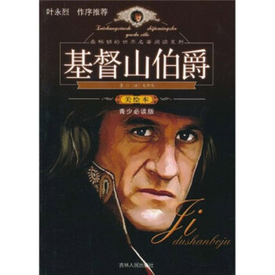

《基督山伯爵》是法国作家大仲马创作的长篇小说，首次发表于1844年至1846年。
故事讲述19世纪法国皇帝拿破仑“百日王朝”时期，法老号大副爱德蒙·唐泰斯受船长委托，为拿破仑党人送了一封信，遭到两个卑鄙小人和法官的陷害，被打入黑牢。期间狱友法利亚神父向他传授各种知识，并在临终前把埋于基督山岛上的一批宝藏的秘密告诉了他。被陷害入狱十四年后，唐泰斯越狱并找到了宝藏，成为巨富，从此化名基督山伯爵，经过精心策划，报答了恩人，惩罚了仇人。